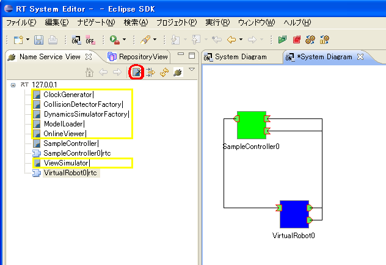

目次
プラットフォーム共通のトラブルGrxUI on Eclispe をコンパイルする時型解決のエラーが発生
GrxUI on Eclispe をコンパイルする際jp.go.aist.hrp以下のパッケージが
見つからないために型解決のエラーが起こることがあります。 Linuxでの対処法
make時にjオプションを指定した場合特有のエラーですので、jオプションを使用しないでコンパイルしてください。 Windowsでの対処法
VCのプロジェクトで明示的に依存プロジェクトを指定するとこのエラーを回避できるようになります。
RTSystemEditorの「ゾンビをクリア」ボタンを押下するとGrxUIが正常に動作しなくなる
RTSystemEditorには
「ネームサーバにエントリされてはいるが、実体のオブジェクトにアクセスできないゾンビオブジェクト」をネームサーバーから一括して削除する機能
があります。
 ファイルの一時保存先を変更したい
OpenHRP3では、シミュレーションの実効中、ログを一時的にファイルに保存しています。 最後の行に -Djava.io.tmpdir=(変更先のディレクトリ）を追加してください。 Linux特有のトラブルUbuntu9.04以降の環境でサンプルが動作しない（Linux 対象）Ubuntu9.04以降の環境で初回導入時、サンプルが動作しないことがあります。 この時、端末から $ openhrp-aist-dynamics-simulator -ORBInitRef NameService=corbaloc:iiop:localhost:2809/NameServiceと実行して IDL:omg.org/CORBA/TRANSIENT:1.0と出力されれば、Ubuntu9.04以降でipv6がデフォルトで有効になったことが原因による不具合と思われます。 対処法は、/etc/hostsの ::1 localhost ip6-localhost ip6-loopbackipv6のlocalhost設定の行をコメントアウトしてください。 Ubuntuでアップデートを行うとコンパイルエラー、またはGrxUIの起動時に例外が発生して起動できない（Linux 対象）javaコードのコンパイルエラーやGrxUI実行時に Null peer?!とコンソール出力されてGrxUIの起動が止まるなどの現象が起こります。 Ubuntuのアップデートを行うとデフォルトでインストールされているgcjが最新版に更新されて、 インストール時に切り替えた標準Java環境がsunのJavaから gcjへ切り替わる現象が原因です。 この現象を解消するには、インストール時と同様にコマンド $ sudo update-java-alternatives -s java-6-sunまたは $ sudo update-java-alternatives -s java-6-openjdkを実行してシステムの標準Javaを切り替えてください。 gcjを使用しない場合はgcjをアンインストールしてしまうのも手です。 GrxUI起動時にOpenHRPのサーバ群が起動しない
インストールディレクトリを変更してインストールした場合、OpenHRPの実行ファイルから共有ライブラリが見つからないために正しくサーバ群が起動できないことがあります。 $ ldd openhrp-model-loader上記の結果、libhrp* のライブラリが not found になっている場合、 環境変数 LD_LIBRARY_PATH に (インストール先ディレクトリ)/lib を追加してください。 Windows特有のトラブルomniNamesが正常に起動しない
GrxUIパースペクティブを開き、ネームサービスモニタ・タブ・ウィンドウの更新ボタンを押下してもサーバが列挙されない場合はこの不具合の可能性があります。 Python版のomniORBを導入した環境でPythonのルートディレクトリを環境変数のPATHに登録した時に起こる不具合コマンドプロンプトにて>omniNames -ORBendPointPublish giop:tcp:localhost: -start 2809を実行した時
Fri Feb 05 09:40:17 2010:
Error: cannot open log file 'C:\temp\omninames-PC_NAME.log'.
usage: omniNames [-start [<port>]]
[-logdir <directory name>]
[-errlog <file name>]
[-ignoreport]
[<omniORB-options>...]
Use -start option to start omniNames for the first time.
With no <port> argument, the standard default of 2809 is used.
Use -logdir option to specify the directory where the log/data files are kept.
Use -errlog option to specify where standard error output is redirected.
Use -ignoreport option to ignore the port specification.
You can also set the environment variable OMNINAMES_LOGDIR to specify the
directory where the log/data files are kept.
のように表示された場合がこれにあたります。対処法として環境変数PATHからPythonのルートディレクトリを除外してください。 |